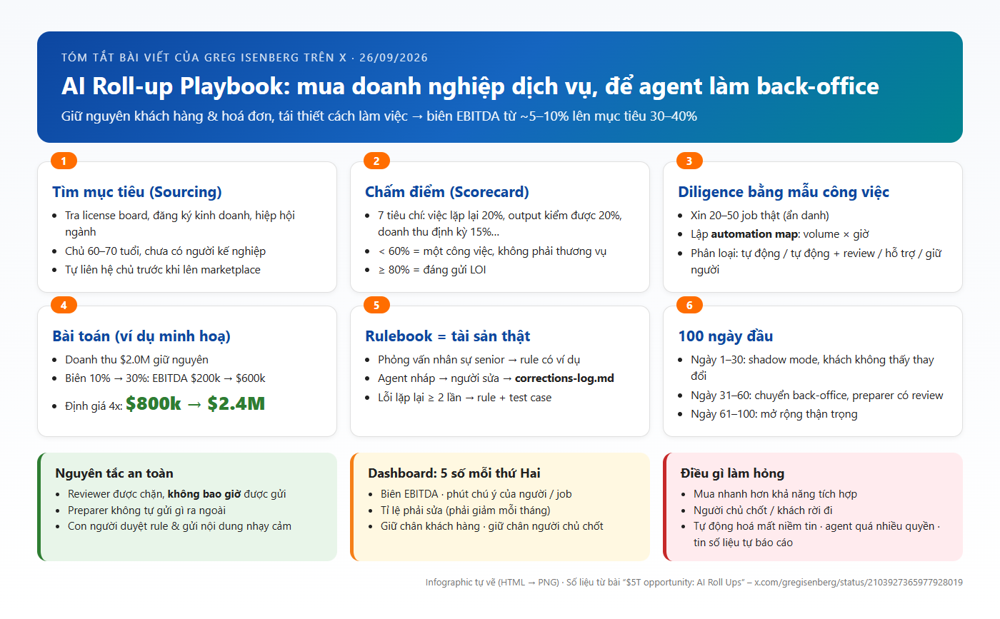
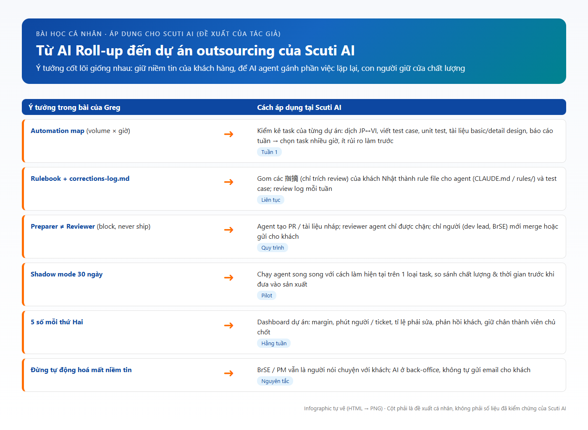

Mục lục
1. Bài viết gốc & cách tiếp cận nguồn
Link được giao (x.com/gregisenberg/status/2103927365977928019) không phải một tweet ngắn mà là một X Article (bài viết dài, khoảng 10–15 phút đọc) có tiêu đề “$5T opportunity: AI Roll Ups”, đăng ngày 26/09/2026. Tác giả Greg Isenberg là CEO của Late Checkout (LCA) và host podcast The Startup Ideas Podcast.
Số liệu tương tác ghi nhận tại thời điểm đọc bài (03/10/2026). Số bookmark cao gấp ~3 lần số like cho thấy người đọc coi đây là tài liệu “lưu lại để làm theo”.
Cách lấy nội dung (minh bạch nguồn)
- Mở trực tiếp trên x.com bằng Chrome (không đăng nhập): X chỉ hiện tiêu đề, ảnh bìa, số tương tác và vài đoạn mở đầu, phần còn lại bị mờ dần kèm nút “Continue to X” và khung “Log in or sign up for X”. Không nhập tài khoản, không tạo tài khoản.
- Đọc bản đầy đủ qua trang xem công khai fxtwitter.com (hiển thị toàn bộ Article: tiêu đề, các đoạn văn, 8 ảnh minh hoạ). Toàn bộ tóm tắt bên dưới dựa trên nội dung này.
- Để dễ đọc, mình chép bài ra một trang đọc gọn (
sources/article-reader.html), giữ nguyên văn bản gốc.
2. Thông điệp cốt lõi
Đừng xây sản phẩm AI rồi đi tìm khách hàng — hãy mua một doanh nghiệp dịch vụ “nhàm chán” vốn đã có khách hàng, giấy phép và niềm tin, rồi dùng AI agent làm lại cách công việc được thực hiện. Doanh thu và khách hàng giữ nguyên, chi phí cho mỗi đơn vị công việc giảm, nên lợi nhuận có thể tăng gấp 3–4 lần.
Greg mở bài bằng một con số vĩ mô: theo McKinsey, khoảng 5 nghìn tỷ USD giá trị doanh nghiệp Mỹ sẽ đổi chủ đến năm 2035, phần lớn thuộc thế hệ baby boomer sắp nghỉ hưu và không có người kế nghiệp. Ví dụ đầu tiên là hãng kế toán Larson Gross (thành lập 1949, ~200 nhân viên, được Thrive Holdings mua cổ phần): mùa thuế vừa rồi AI đã xử lý 7.000 tờ khai, kế toán viên tiết kiệm trung bình 31% thời gian, có một đầu việc giảm từ 180 giờ/năm xuống 15 giờ.
Điều mình thấy đáng chú ý: bài không dừng ở mức “ý tưởng hay”, mà đi đến tận cấu trúc thư mục, danh sách agent và prompt cụ thể — tức là một playbook vận hành, không chỉ là một luận điểm đầu tư.
3. Các insight cụ thể
3.1. AI roll-up là “private equity kiểu mới”
Roll-up là chiến lược cũ: gom nhiều doanh nghiệp nhỏ cùng ngành lại để công ty lớn đáng giá hơn tổng các phần. Quỹ PE đã làm điều này 40 năm, chủ yếu bằng kỹ thuật tài chính (gộp back-office, đàm phán lại nhà cung cấp, thêm nợ, bán lại). Điểm khác của AI roll-up là thay đổi phần ở giữa: mua doanh nghiệp dịch vụ với giá của doanh nghiệp dịch vụ, rồi để agent đảm nhận phần lớn khối lượng công việc. Giả thuyết của Greg: biên EBITDA từ 5–10% có thể lên 30–40%.
3.2. Vì sao là bây giờ: ba yếu tố cùng lúc
- Model đủ giỏi cho công việc thật — nhập liệu, bản nháp tờ khai thuế, rà soát hợp đồng, ticket hỗ trợ. Hai năm trước kết quả phải làm lại; bây giờ chỉ cần kiểm tra.
- Chủ doanh nghiệp đang nghỉ hưu — con cái không muốn tiếp quản, nhân viên không đủ tiền mua.
- Phép tính hợp lý — doanh nghiệp dịch vụ được định giá thấp vì thị trường nghĩ biên lợi nhuận bị “kẹt”. Chứng minh được điều ngược lại là bạn đã mua tài sản với giá chiết khấu.
3.3. Ai đang làm và họ đạt được gì
| Công ty | Lĩnh vực | Kết quả được nêu trong bài |
|---|---|---|
| Long Lake | Quản lý bất động sản | 18 thương vụ, $100M EBITDA trong chưa đầy 2 năm, biên gấp đôi |
| Crescendo | Contact center | 90% ticket tuyến đầu do AI xử lý, biên gấp 4 đối thủ truyền thống |
| Titan MSP | Dịch vụ IT | 30%+ workflow được tự động hoá, mục tiêu biên ròng gấp 3 |
| Dwelly | Bất động sản (Anh) | Thời gian xử lý sự cố giảm từ 50 xuống 20 ngày, biên gấp đôi |
| Thrive Holdings | Kế toán | Mua gần 50 hãng kế toán địa phương trong 2 năm, cam kết thêm $1 tỷ |
| General Catalyst | Quỹ đầu tư | Dành $1,5 tỷ cho chiến lược này, đã rót hơn $750M vào ít nhất 10 công ty |
Lưu ý chính Greg nêu ra: các con số này là tự báo cáo bởi những công ty còn trẻ, đang gọi vốn, và chưa trải qua suy thoái nào. Cấu trúc deal của GC đáng tham khảo: khoảng 60–70% trả tiền mặt khi đóng deal, ~30% chuyển thành cổ phần cho người sáng lập để họ có lý do ở lại hỗ trợ bàn giao.

3.4. Không chỉ dành cho quỹ tỷ đô
Đây là phần mình thấy “ngược đời” nhưng thuyết phục. Greg cho rằng các quỹ lớn sẽ bỏ lại phần lớn thị trường cho cá nhân, vì:
- Quỹ cần deal lớn; một hãng kế toán doanh thu $2M/năm quá nhỏ với họ — trong khi đa số doanh nghiệp sắp đổi chủ lại ở cỡ đó.
- Công cụ là như nhau: agent thuế của Larson Gross chạy trên OpenAI Codex; một founder đơn lẻ có thể dựng workflow bằng Claude Code hoặc Codex vào buổi tối.
- Rủi ro lớn nhất của roll-up là tích hợp không kịp. Người mua một doanh nghiệp duy nhất tự mình là “lớp tích hợp”: ngồi ở văn phòng, biết tên từng khách, nhìn từng bản nháp agent.
- Nhiều chủ cũ thích bán cho một con người hơn là cho một quỹ gặp qua Zoom.
- Tài chính cho deal cỡ này đã có sẵn (khoản vay SBA, seller note).
3.5. Vì sao mua thay vì tự build
Phần khó nhất của doanh nghiệp dịch vụ không nằm ở phần mềm: danh sách khách hàng mất 30 năm để có, niềm tin mang tính cá nhân, giấy phép cần thi cử và thời gian, còn hiểu biết về “thế nào là đúng” trong ngách thì nằm trong đầu người làm lâu năm. Lịch sử công việc — mọi edge case, mọi lỗi đã được bắt và sửa — chính là dữ liệu huấn luyện cho agent mà startup không có. Startup phải vừa giành khách vừa làm việc; thương vụ mua lại đã có khách, chỉ cần thay đổi cách làm.
3.6. Cấu trúc thư mục chính là mô hình vận hành
Trước khi mua bất cứ thứ gì, Greg khuyên dựng sẵn “hệ điều hành” dạng thư mục /holdco với các nhánh /thesis, /deals, /platform (agents, rules, tests), /firms, /runbooks. Mỗi doanh nghiệp mua về đều cắm vào cùng một khung. Nếu chỉ làm một việc, hãy làm 3 file:
target-criteria.md— quyết định mua cái gì.rules/— quyết định agent có đáng tin hay không.corrections-log.md— cách rule tốt lên mỗi tuần.

Agent chia làm hai nhóm: trước deal (sourcing, diligence, modeling — con người chọn và quyết định) và sau deal (rulebook extractor, intake, preparer, reviewer, client comms, reporting — con người duyệt rule và tự gửi các trao đổi nhạy cảm). Quyết định thiết kế quan trọng nhất: reviewer được chặn nhưng không bao giờ được “ship”, còn preparer không tự gửi được gì. Tách hai vai trò này ngăn phần lớn output tồi đến tay khách.

3.7. Quy trình 6 bước từ tìm kiếm đến vận hành
| Bước | Làm gì | Điểm mấu chốt |
|---|---|---|
| 1. Sourcing | Tìm doanh nghiệp chưa rao bán qua license board, đăng ký kinh doanh, hiệp hội ngành; tự viết thư cho chủ | Lên marketplace rồi thì phần lớn “alpha” đã mất |
| 2. Scorecard | Chấm 7 tiêu chí có trọng số (việc lặp lại, output kiểm được, doanh thu định kỳ, người bán có động lực, khách trung thành với công ty, dữ liệu sạch, thị trường phân mảnh) | < 60% là “một công việc”; > 80% đáng gửi LOI |
| 3. Diligence | Xin 20–50 mẫu công việc thật, cho AI lập automation map: trigger, input, thời gian, tần suất, có kiểm được không, sai thì hậu quả gì | Volume × giờ cho biết margin nằm ở đâu trước khi ký |
| 4. Bài toán | Ví dụ: doanh thu $2M, biên 10% → 30%, EBITDA $200k → $600k; ở hệ số 4x, giá trị $800k → $2,4M | Toàn bộ cuộc chơi là giữ được biên lợi nhuận |
| 5. Rulebook | 60 ngày đầu: phỏng vấn nhân sự senior, biến kinh nghiệm ngầm thành rule có ví dụ; mỗi tuần biến corrections log thành rule mới + test case | Ai cũng dùng được cùng model; không ai có danh sách lỗi riêng của bạn |
| 6. 100 ngày đầu | 1–30: shadow mode, khách không thấy thay đổi; 31–60: chuyển back-office, preparer có review; 61–100: mở rộng thận trọng | Ngày 100 phải biết: agent làm được bao nhiêu, chi phí review thật, ai quan trọng đang không vui |
3.8. Rulebook và corrections log là “hào” cạnh tranh
Mỗi doanh nghiệp vận hành bằng những luật chưa ai viết ra: khách luôn gửi giấy tờ trễ, loại khấu trừ mà partner luôn kiểm lại, cách diễn đạt mà một khách thấy bất lịch sự. Khi người senior rời đi, các luật đó đi theo. Greg đưa hai prompt mẫu: một để phỏng vấn người senior và biến câu trả lời thành rule đánh số (chỉ có hiệu lực khi họ duyệt), một để so sánh bản nháp của agent với bản người đã duyệt, phân loại thay đổi (lỗi sự thật, sở thích khách, thiếu thông tin, văn phong) và đề xuất rule cho lỗi lặp lại.
3.9. Dashboard 5 con số mỗi thứ Hai
Biên EBITDA, số phút chú ý của con người cho mỗi job (chi phí thật của agent), tỉ lệ phải sửa (phải giảm mỗi tháng), tỉ lệ giữ chân khách hàng, tỉ lệ giữ chân người chủ chốt. Câu chốt mình thích: nếu biên lợi nhuận tăng mà retention giảm, bạn đang bán chính tài sản để trả tiền sửa nhà.

3.10. Nên mua gì và điều gì làm hỏng
Ngành phù hợp: kế toán/sổ sách, quản lý bất động sản, đại lý bảo hiểm, IT managed services, medical billing, payroll, quản lý HOA, title & escrow, môi giới vận tải, staffing — đều có việc lặp lại, output kiểm được, khách định kỳ, sở hữu phân mảnh và nhiều chủ sắp nghỉ hưu.
6 cách thất bại Greg cảnh báo
- Mua nhanh hơn khả năng tích hợp.
- Người chủ chốt nghỉ việc và mang theo quan hệ khách hàng.
- Khách trung thành với chủ cũ rời đi cùng chủ cũ.
- Tự động hoá làm mất niềm tin — margin đến từ back-office, nhưng giá trị đến từ quan hệ.
- Agent có quá nhiều quyền (ví dụ tự gửi email cho khách không qua checkpoint).
- Tin vào số liệu “headline” — hãy định giá deal bằng số của chính mình.
4. Infographic tổng hợp playbook
Mình tóm toàn bộ bài viết thành một trang: 6 bước, nguyên tắc an toàn, dashboard và các rủi ro. Số liệu lấy từ bài gốc; bố cục và cách diễn đạt là của mình.

5. Bài học cá nhân
- Lợi thế không nằm ở model mà ở “luật của ngách”. Ai cũng thuê được cùng một model. Thứ khác biệt là bộ rule tích luỹ từ hàng trăm lần sửa. Với một công ty outsourcing, đó chính là tri thức về khách hàng và domain mà mỗi dự án đang để rơi rớt trong chat và đầu người.
- Niềm tin là tài sản đắt nhất, đừng tự động hoá nó đi. Greg tách bạch: margin đến từ back-office, giá trị đến từ quan hệ. AI nên làm “phía sau quầy”, còn người giữ vai trò đối diện khách.
- Đo bằng “phút chú ý của con người”, không phải “% tự động hoá”. Một agent tạo nhiều bản nháp nhưng bắt người review lâu thì không rẻ. Chỉ số này trung thực hơn nhiều so với cảm giác “AI làm được rồi”.
- Tách quyền tạo và quyền duyệt. “Reviewer có thể chặn, không bao giờ được ship” là nguyên tắc thiết kế agent mình sẽ mang theo cho mọi workflow.
- Hoài nghi số liệu đẹp. Ngay trong bài quảng bá cơ hội, tác giả vẫn nhắc số liệu là tự báo cáo và chưa qua suy thoái. Khi đề xuất AI cho khách, mình cũng nên đưa số đo của chính dự án thay vì trích benchmark của người khác.
Mình không đi mua công ty, nhưng mô hình này áp dụng gần như nguyên vẹn cho cách một công ty dịch vụ phần mềm vận hành: khách hàng và niềm tin đã có, việc cần làm là thay đổi cách công việc được giao.
6. Áp dụng vào dự án & vận hành tại Scuti AI
Scuti AI là công ty outsourcing AI/phần mềm tại Việt Nam với khách hàng Nhật Bản. Về bản chất, đây cũng là một doanh nghiệp dịch vụ: có khách định kỳ, có quy trình lặp lại (spec, dịch tài liệu, code, test, báo cáo), và chất lượng được đánh giá rất khắt khe. Vì vậy các ý tưởng của Greg có thể “ánh xạ” khá trực tiếp. Bảng dưới là đề xuất cá nhân của mình, không phải số liệu đã kiểm chứng.

6.1. Hướng dẫn nhanh: 5 bước bắt đầu trong một dự án
Lập automation map cho dự án (tuần 1). Liệt kê task lặp lại: dịch tài liệu JP↔VI, viết test case từ spec, unit test, cập nhật basic/detail design, báo cáo tuần. Ghi số lần/tháng × giờ/lần, và phân loại: tự động ngay / tự động + review / chỉ hỗ trợ / giữ người.
Tạo rulebook cho agent. Phỏng vấn dev lead, BrSE về các lỗi junior hay mắc, yêu cầu riêng của khách (coding convention, định dạng tài liệu, cách viết 敬語). Ghi thành rules/ hoặc CLAUDE.md trong repo, mỗi rule có ví dụ.
Chạy shadow mode trên 1 loại task trong ~30 ngày. Agent làm song song, người vẫn làm như cũ; so sánh chất lượng và thời gian. Chưa có gì do agent tạo ra được gửi cho khách.
Ghi corrections log mỗi lần người sửa output của agent — đặc biệt là các 指摘 (comment review) từ phía khách Nhật. Cuối tuần, lỗi lặp lại ≥ 2 lần thành rule mới + test case.
Xem 5 con số mỗi thứ Hai trong buổi họp nội bộ: margin dự án, phút người/ticket, tỉ lệ phải sửa, phản hồi khách, giữ chân thành viên chủ chốt.
6.2. Mẫu file dùng ngay
Các dòng trên là ví dụ minh hoạ định dạng, không phải dữ liệu dự án thật.
6.3. Trong vận hành hằng ngày
- Phân quyền agent rõ ràng: agent được tạo PR, bản nháp tài liệu, bản dịch; agent review được chặn PR; chỉ con người merge và gửi email/tài liệu cho khách.
- BrSE/PM vẫn là “gương mặt” với khách Nhật. AI giúp chuẩn bị nhanh hơn, không thay người trong các cuộc họp hay trao đổi nhạy cảm.
- Giữ tri thức khi nhân sự thay đổi: rulebook và corrections log giúp người mới vào dự án không lặp lại lỗi cũ — đúng tinh thần “lấy luật ra khỏi đầu người, đưa vào file”.
- Báo cáo bằng số của chính mình: khi đề xuất AI cho khách, dùng số đo từ shadow mode thay vì benchmark trên mạng.
7. Video demo
Video quay lại quá trình đọc bài và tổng hợp: mở bài trên x.com → gặp login wall → mở bản đầy đủ trên fxtwitter → đọc bài trong trang đọc gọn → xem 2 infographic → mở blog hoàn chỉnh và lướt từ đầu đến cuối.
8. Kết luận
Bài viết của Greg Isenberg là một playbook thực dụng: mua niềm tin đã có sẵn, dùng AI agent làm lại back-office, giữ con người ở những điểm kiểm soát, và đo bằng số liệu thật mỗi tuần. Với Scuti AI, giá trị lớn nhất không phải là chuyện mua bán doanh nghiệp, mà là ba thói quen có thể bắt đầu ngay:
- Lập automation map cho dự án để biết AI nên làm gì trước.
- Duy trì rulebook + corrections log để mỗi lần sửa trở thành tài sản.
- Tách quyền tạo / duyệt của agent và theo dõi 5 con số mỗi tuần.
Tài liệu tham khảo
- Greg Isenberg – “$5T opportunity: AI Roll Ups” (X, 26/09/2026)
- fxtwitter – bản xem công khai của bài viết (nguồn nội dung thực tế được dùng)
- Bản lưu cục bộ:
sources/article-text.md,sources/article-reader.html